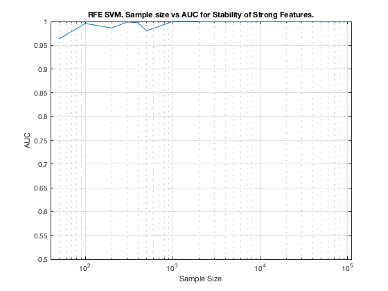

MltNet. Summary. RFE.
summary_stability_type("MltNet", 2)
TOTAL COUNTS: Strong:=23, Weak=1300, Irrelevant=4
Figure 61. RFE SVM. Sample size vs AUC for Stability of Strong Features.
_________________________________________________________________________

Table 61. Breakdown of Stability by Feature Type. RFE SVM,
___________________________________________________________
(1) Number Features Repeat : number of unique features that were selected in a repeat
(2) Number Features Fold : number of unique features that were selected in a fold
(3) Feature Stability ~ Feature Selection Frequency
Sample_Size ALL__Number_Features_Repeat ALL__Number_Features_Fold ALL__Stability
___________ ___________________________ _________________________ ___________________
' 50 ' ' 88.1 +/- 185.5 ' ' 12.0 +/- 25.2 ' ' 0.009 +/- 0.011 '
' 100 ' ' 41.5 +/- 116.0 ' ' 5.1 +/- 12.1 ' ' 0.006 +/- 0.014 '
' 200 ' ' 86.8 +/- 268.2 ' ' 9.6 +/- 26.9 ' ' 0.007 +/- 0.015 '
' 300 ' ' 58.2 +/- 128.3 ' ' 6.9 +/- 13.2 ' ' 0.010 +/- 0.024 '
' 400 ' ' 106.9 +/- 318.3 ' ' 14.6 +/- 45.2 ' ' 0.011 +/- 0.018 '
' 500 ' ' 40.8 +/- 100.0 ' ' 5.5 +/- 10.7 ' ' 0.008 +/- 0.030 '
' 1000 ' ' 85.3 +/- 264.7 ' ' 10.7 +/- 27.1 ' ' 0.008 +/- 0.028 '
' 2000 ' ' 30.7 +/- 26.3 ' ' 6.9 +/- 3.9 ' ' 0.040 +/- 0.101 '
' 5000 ' ' 42.9 +/- 28.1 ' ' 16.9 +/- 5.1 ' ' 0.081 +/- 0.189 '
' 10000 ' ' 43.0 +/- 24.3 ' ' 22.9 +/- 3.9 ' ' 0.134 +/- 0.284 '
' 100000 ' ' 39.7 +/- 22.6 ' ' 23.3 +/- 2.9 ' ' 0.127 +/- 0.308 '
Sample_Size STRG_Number_Features_Repeat STRG_Number_Features_Fold STRG_Stability
___________ ___________________________ _________________________ ___________________
' 50 ' ' 6.4 +/- 5.9 ' ' 1.2 +/- 1.0 ' ' 0.051 +/- 0.044 '
' 100 ' ' 6.4 +/- 5.4 ' ' 1.3 +/- 0.8 ' ' 0.056 +/- 0.064 '
' 200 ' ' 8.0 +/- 6.3 ' ' 1.6 +/- 0.8 ' ' 0.070 +/- 0.096 '
' 300 ' ' 8.9 +/- 7.1 ' ' 1.9 +/- 1.2 ' ' 0.083 +/- 0.108 '
' 400 ' ' 8.7 +/- 6.2 ' ' 2.1 +/- 1.2 ' ' 0.091 +/- 0.113 '
' 500 ' ' 8.8 +/- 5.7 ' ' 2.2 +/- 1.0 ' ' 0.095 +/- 0.131 '
' 1000 ' ' 12.9 +/- 7.0 ' ' 3.4 +/- 1.8 ' ' 0.146 +/- 0.159 '
' 2000 ' ' 17.6 +/- 5.9 ' ' 5.3 +/- 2.1 ' ' 0.232 +/- 0.182 '
' 5000 ' ' 22.1 +/- 2.1 ' ' 13.4 +/- 3.3 ' ' 0.583 +/- 0.174 '
' 10000 ' ' 22.9 +/- 0.4 ' ' 19.3 +/- 1.7 ' ' 0.839 +/- 0.098 '
' 100000 ' ' 23.0 +/- 0.0 ' ' 21.2 +/- 0.2 ' ' 0.921 +/- 0.183 '
Sample_Size WEAK_Number_Features_Repeat WEAK_Number_Features_Fold WEAK_Stability
___________ ___________________________ _________________________ ___________________
' 50 ' ' 81.6 +/- 180.4 ' ' 10.8 +/- 24.3 ' ' 0.008 +/- 0.007 '
' 100 ' ' 35.0 +/- 112.2 ' ' 3.8 +/- 11.7 ' ' 0.004 +/- 0.004 '
' 200 ' ' 78.6 +/- 262.9 ' ' 7.9 +/- 26.4 ' ' 0.006 +/- 0.004 '
' 300 ' ' 49.3 +/- 122.7 ' ' 5.0 +/- 12.4 ' ' 0.008 +/- 0.006 '
' 400 ' ' 97.9 +/- 313.0 ' ' 12.5 +/- 44.2 ' ' 0.010 +/- 0.003 '
' 500 ' ' 31.9 +/- 96.4 ' ' 3.4 +/- 10.1 ' ' 0.005 +/- 0.006 '
' 1000 ' ' 72.2 +/- 260.9 ' ' 7.4 +/- 26.1 ' ' 0.006 +/- 0.004 '
' 2000 ' ' 13.0 +/- 24.1 ' ' 1.5 +/- 2.5 ' ' 0.010 +/- 0.014 '
' 5000 ' ' 20.8 +/- 28.0 ' ' 3.5 +/- 3.6 ' ' 0.019 +/- 0.039 '
' 10000 ' ' 20.1 +/- 24.3 ' ' 3.6 +/- 4.4 ' ' 0.024 +/- 0.040 '
' 100000 ' ' 16.7 +/- 22.6 ' ' 2.1 +/- 2.8 ' ' 0.013 +/- 0.022 '
Sample_Size IRRE_Number_Features_Repeat IRRE_Number_Features_Fold IRRE_Stability
___________ ___________________________ _________________________ ___________________
' 50 ' ' 0.1 +/- 0.3 ' ' 0.0 +/- 0.0 ' ' 0.003 +/- 0.002 '
' 100 ' ' 0.1 +/- 0.4 ' ' 0.0 +/- 0.0 ' ' 0.003 +/- 0.001 '
' 200 ' ' 0.2 +/- 0.8 ' ' 0.0 +/- 0.1 ' ' 0.005 +/- 0.001 '
' 300 ' ' 0.0 +/- 0.0 ' ' 0.0 +/- 0.0 ' ' NaN +/- NaN '
' 400 ' ' 0.2 +/- 1.0 ' ' 0.0 +/- 0.1 ' ' 0.008 +/- 0.000 '
' 500 ' ' 0.0 +/- 0.0 ' ' 0.0 +/- 0.0 ' ' NaN +/- NaN '
' 1000 ' ' 0.2 +/- 0.8 ' ' 0.0 +/- 0.1 ' ' 0.004 +/- 0.000 '
' 2000 ' ' 0.0 +/- 0.0 ' ' 0.0 +/- 0.0 ' ' NaN +/- NaN '
' 5000 ' ' 0.0 +/- 0.0 ' ' 0.0 +/- 0.0 ' ' NaN +/- NaN '
' 10000 ' ' 0.0 +/- 0.0 ' ' 0.0 +/- 0.0 ' ' NaN +/- NaN '
' 100000 ' ' 0.0 +/- 0.0 ' ' 0.0 +/- 0.0 ' ' NaN +/- NaN '